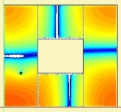
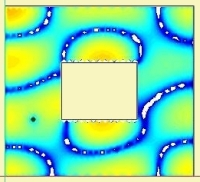
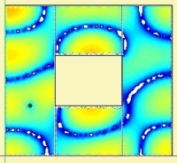

Subdomain Modeling
AKABAK supports subdomain modeling [37]. In this mode the total structure is split into several subdomains. The Boundary Element Method happens in two stages. First, unknown parameters of each subdomain are solved for. Subsequently, the solver calculates parameters of the interfaces. Subdomain-modeling is powerful for larger acoustic systems, such as vented loudspeaker enclosures or horns, for example. In BEM it is the only way to deal with certain cases of radiation from an Infinite Baffle.
 |
 |
To give an example, the above figure shows a cut through a typical vented enclosure. The red structure is the loudspeaker diaphragm. The vent couples the interior to the exterior space.
If we would assemble all boundary conditions into one big matrix, it then follows that any element of the exterior domain would be directly linked to any element of the interior. Hence, we would need increased accuracy during calculation in order to balance resulting coefficients. In this example, the reason for difficulties lies in the fact that the interior and exterior are only loosely coupled via the vent (note also, that we would then need also some wall thickness for this example).
 |

 |
It is far easier to apply multiple BE-subdomains, for example, one for the interior, one for the vent and one for the exterior. In a second step these subdomains are coupled with the help of interfaces (blue areas and yellow below). In this case no element of the exterior is directly coupled to any interior element and vice versa. As a result there are three system-matrices, which needs to be solved and one additional for all interfaces. However, each of this sub-matrices is relative small, and because of this calculation is stable and quick.
Interfaces
The coupling between the subdomains is done through special Interface Elements. An Interface is a virtual boundary with conditions of equal sound pressure and normal velocity on both sides.
Interface-elements need to be manually placed as if they were Boundary Elements. Interfaces can be of any shape, sometimes it is of advantage to curve or extrude the surface. For the elements of an interface the same recommendations apply as for normal elements. However, experience shows that the sensitivity of the result is somewhat higher to the mesh-density of the interface, ie it is recommended to mesh the interfaces with a higher density. It is difficult to give a rule of thumb here. Say, if you notice that the interface consists only of a few triangles after meshing and you want to analyse higher frequencies then it is recommended to provide as smaller value of Edge Length at the Meshing Page of the interface-component in order to increase the number of finite-elements.
Domain
A subdomain, which is not BEM-coupled to another subdomain we call Domain. A domain is a subdomain without associated interfaces. A domain can only be coupled to another subdomain via the Lumped Element Network. For example, imagine to model several loudspeaker systems. Each may feature a sealed enclosure. In this case the interior of the enclosure is not coupled by means of an interface. It becomes an individual domain. AKABAK recognizes domains automatically. We, as user, specify a domain in the same way as a subdomain. Another example is displayed to the right. Subdomain "Interior" forms a domain because it models a sealed enclosure. Contrarily, subdomains "Horn" and "Exterior" share interface "Int1" (see example "ABEC21 Sealed Mesh-Files.akp").
Operation
We need to communicate the structure of subdomains to AKABAK. This is done by assigning BEM-components to Subdomain-components and Interface-components. AKABAK provides a tree-list where we first add a subdomain or an interface component as parent. Then BEM-components are distributed to subdomains and interfaces.
When we first create a BEM-component at menu Edit/New Component, AKABAK will ask to which subdomain or interface the new component shall be assigned. Existing BEM-components can be moved to another subdomain with the help of menu Venue/Subdomain.
A subdomain should be specified of type Interior or Exterior. Interior means the volume of the subdomain is fully enclosed by finite-elements. An Exterior subdomain on the other hand assumes radiation to infinity. However, also here, the boundary needs to be closed. Exceptions are the Infinite Baffle and the Interface.
Notes
The subdomain technique is as exact as the classic method, there are no approximations involved.
 |  |
 |  |
| Standard BEM | Subdomain BEM (4) |
The above simulations demonstrate the equivalence between the standard approach of the boundary element method and the subdomain technique. There is a ring-fom structure. Its interior field is calculated with pressure point driving (dot at the bottom left). The four gray vertical lines are interfaces where the field is constrained to be continuous and compatible.
 |
Further examples, which can benefit from subdomain-modelling, are elongated systems of chambers, wave-guides with fins and the radiation of concave shapes from the infinite baffle.
 |
 |
 |